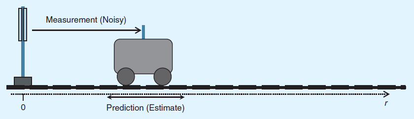
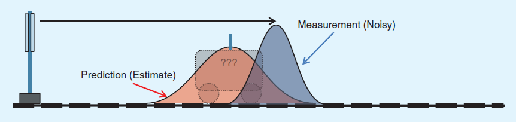

Author: xiahouzuoxin / Date: 2014-09-25
转载请注明出处：http://xiahouzuoxin.github.io
We are like dwarfs on the shoulders of giants, by whose grace we see farther than they. Our study of the works of the ancients enables us to give fresh life to their finer ideas, and rescue them from time’s oblivion and man’s neglect.
—— Peter of Blois, late twelfth century
太喜欢第一句话了，“我们是巨人肩膀上的矮人，巨人们的优雅让我么看得更比他们更远”，谁说不是呢？
说起Kalman滤波器的历史，最早要追溯到17世纪，Roger Cotes开始研究最小均方问题。但由于缺少实际案例的支撑（那个时候哪来那么多雷达啊啥的这些信号啊），Cotes的研究让人看着显得很模糊，因此在估计理论的发展中影响很小。17世纪中叶，最小均方估计（Least squares Estimation）理论逐步完善，Tobias Mayer在1750年将其用于月球运动的估计，Leonard Euler在1749年、Pierre Laplace在1787分别用于木星和土星的运动估计。Roger Boscovich在1755用最小均方估计地球的大小。1777年，77岁的Daniel Bernoulli（大名鼎鼎的伯努利）发明了最大似然估计算法。递归的最小均方估计理论是由Karl Gauss建立在1809年（好吧，他声称在1795年就完成了），当时还有Adrien Legendre在1805年完成了这项工作，Robert Adrain在1808年完成的，至于到底谁是Boss，矮子们就别管了吧！
在1880年，丹麦的天文学家Thorvald Nicolai Thiele在之前最小均方估计的基础上开发了一个递归算法，与Kalman滤波非常相似。在某些标量的情况下，Thiele的滤波器与Kalman滤波器时等价的，Thiele提出了估计过程噪声和测量噪声中方差的方法（过程噪声和测量噪声是Kalman滤波器中关键的概念）。
上面提到的这么多研究估计理论的先驱，大多是天文学家而非数学家。现在，大部分的理论贡献都源自于实际的工程。“There is nothing so practical as a good theory”，应该就是“实践是检验真理的唯一标准”之类吧。
现在，我们的控制论大Wiener终于出场了，还有那个叫Kolmogorov（柯尔莫戈洛夫）的神人。在19世纪40年代，Wiener设计了Wiener滤波器，然而，Wiener滤波器不是在状态空间进行的（这个学过Wiener滤波的就知道，它是直接从观测空间z(n)=s(n)+w(n)进行的滤波），Wiener是稳态过程，它假设测量是通过过去无限多个值估计得到的。Wiener滤波器比Kalman滤波器具有更高的自然统计特性。这些也限制其只是更接近理想的模型，要直接用于实际工程中需要足够的先验知识（要预知协方差矩阵），美国NASA曾花费多年的时间研究维纳理论，但依然没有在空间导航中看到维纳理论的实际应用。
在1950末期，大部分工作开始对维纳滤波器中协方差的先验知识通过状态空间模型进行描述。通过状态空间表述后的算法就和今天看到的Kalman滤波已经极其相似了。Johns Hopkins大学首先将这个算法用在了导弹跟踪中，那时在RAND公司工作的Peter Swerling将它用在了卫星轨道估计，Swerling实际上已经推导出了（1959年发表的）无噪声系统动力学的Kalman滤波器，在他的应用中，他还考虑了使用非线性系统动力学和和测量方程。可以这样说，Swerling和发明Kalman滤波器是失之交臂，一线之隔。在kalman滤波器闻名于世之后，他还写信到AIAA Journal声讨要获得Kalman滤波器发明的荣誉（然而这时已经给滤波器命名Kalman了）。总结其失之交臂的原因，主要是Swerling没有直接在论文中提出Kalman滤波器的理论，而只是在实践中应用。
Rudolph Kalman在1960年发现了离散时间系统的Kalman滤波器，这就是我们在今天各种教材上都能看到的，1961年Kalman和Bucy又推导了连续时间的Kalman滤波器。Ruslan Stratonovich也在1960年也从最大似然估计的角度推导出了Kalman滤波器方程。
目前，卡尔曼滤波已经有很多不同的实现。卡尔曼最初提出的形式现在一般称为简单卡尔曼滤波器。除此以外，还有施密特扩展滤波器、信息滤波器以及很多Bierman, Thornton开发的平方根滤波器的变种。也许最常见的卡尔曼滤波器是锁相环，它在收音机、计算机和几乎任何视频或通讯设备中广泛存在。
从现在开始，就要进行Kalman滤波器探讨之旅了，我们先回到高一，从物理中小车的匀加速直线运动开始。
话说，有一辆质量为m的小车，受恒定的力F，沿着r方向做匀加速直线运动。已知小车在t-ΔT时刻的位移是s(t-1)，此时的速度为v(t-1)。求：t时刻的位移是s(t)，速度为v(t)？
由牛顿第二定律，求得加速度：
那么就有下面的位移和速度关系：
如果将上面的表达式用矩阵写在一起，就变成下面这样：
卡尔曼滤波器是建立在动态过程之上，由于物理量（位移，速度）的不可突变特性，这样就可以通过t-1时刻估计（预测）t时刻的状态，其__状态空间__模型为：
对比一下(1)(2)式，长得及其相似有木有：
匀加速直线运动过程就是卡尔曼滤波中状态空间模型的一个典型应用。下面我们重点关注(2)式，鉴于研究的计算机信号都是离散的，将(2)是表示成离散形式为：
其中各个量之间的含义是：
B是控制输入矩阵，其隐含指示了“n时刻给的驱动如何影响n时刻的状态”
从运动的角度，很容易理解：小车当前n时刻的位移和速度一部分来自于n-1时刻的惯性作用，这通过Ax(n)来度量，另一部分来自于现在n时刻小车新增加的外部受力，通过Bu(n)来度量。
w(n)是过程噪声，w(n)~N(0,Q)的高斯分布，过程噪声是使用卡尔曼滤波器时一个重要的量，后面会进行分析。
计算n时刻的位移，还有一种方法：拿一把长的卷尺（嗯，如果小车跑了很长时间，估计这把卷尺就难买到了），从起点一拉，直接就出来了，设测量值为z(n)。计算速度呢？速度传感器往那一用就出来了。
然而，初中物理就告诉我们，“尺子是量不准的，物体的物理真实值无法获得”，测量存在误差，我们暂且将这个误差记为v(n)。这种通过直接测量的方式获得所需物理量的值构成__观测空间__：
z(n)就是测量结果，H(n)是观测矢量，x(n)就是要求的物理量（位移、速度），v(n)~N(0,R)为测量噪声，同状态空间方程中的过程噪声一样，这也是一个后面要讨论的量。大部分情况下，如果物理量能直接通过传感器测量，。
 
现在就有了两种方法（如上图）可以得到n时刻的位移和速度：一种就是通过(3)式的状态空间递推计算（Prediction），另一种就是通过(4)式直接拿尺子和传感器测量（Measurement）。致命的是没一个是精确无误的，就像上图看到的一样，分别都存在0均值高斯分布的误差w(n)和v(n)。
那么，我最终的结果是取尺子量出来的好呢，还是根据我们伟大的牛顿第二定律推导出来的好呢？抑或两者都不是！
为充分利用测量值（Measurement）和预测值（Prediction），Kalman滤波并不是简单的取其中一个作为输出，也不是求平均。
设预测过程噪声w(n)N(0,Q)，测量噪声v(n)N(0,R)。Kalman计算输出分为预测过程和修正过程如下：
预测
预测值：
最小均方误差矩阵：
修正
误差增益：
<img src="http://www.forkosh.com/mathtex.cgi? \large \mathbf{K(n)=P(n|n-1)H^T(n)[R(n)+H(n)P(n|n-1)H^T(n)]^{-1}}.............(7)">修正值：
最小均方误差矩阵：
从(5)~(9)中：
P(n|n-1)：NxN，最小预测均方误差矩阵，其定义式为
K(n)：NxM，误差增益，从增益的表达式看，相当于“预测最小均方误差”除以“n时刻的测量误差+预测最小均方误差”，直观含义就是用n-1预测n时刻状态的预测最小均方误差在n时刻的总误差中的比重，比重越大，说明真值接近预测值的概率越小（接近测量值的概率越大），这也可以从(8)式中看到。
Kalman滤波算法的步骤是(5)(6)->(7)->(8)(9)。当然，建议找本教材复习下上面公式的推导过程，或参见Wiki上的介绍
公式就是那么的抽象，一旦认真研究懂了却也是茅塞顿开，受益也比只知皮毛的多。尽管如此，我还算更喜欢先感性后理性。仍以上面的运动的例子来直观分析：
Example:
还可以更简单一些：设小车做匀速（而非匀加速）直线运动，方便计算，假设速度绝对的恒定（不波动，所以相关的方差都为0），则u(t)==0恒成立。设预测（过程）位移噪声w(n)~N(0,22)，测量位移噪声v(n)~N(0,12)，n-1状态的位移
，速度为v=10m/s，n时刻与n-1时刻的物理时差为ΔT=1s。同时，也用尺子测了一下，结果位移为z(n)=62m。
则A = [1 ΔT; 0 1]=[1 1; 0 1]，根据(5)，预测值为
。
现在已经有了估计值和测量值，哪个更接近真值，这就通过最小均方误差矩阵来决定！
要求已知上次的修正后的最小均方误差P(n-1|n-1)=[1 0; 0 0]（匀速，所以P(2,2)=0，右斜对角线上为协方差，值为0，P(1,1)为n-1时刻位移量的均方误差，因为要计算P(1,1)还得先递推往前计算P(n-2|n-2)，所以这里暂时假设为1），则根据(6)式，最小预测预测均方误差为P(n|n-1)=[1 0; 0 0][1 1; 0 1][1 0; 0 0]=[1 0; 0 0]。
由物理量的关系知，H(n)=[1 1]，增益K(n)=[1;0]{1+[1 1][1 0; 0 0][1; 1]}^(-1)=[1/2;0]。
所以，最后的n时刻估计值既不是用n-1得到的估计值，也不是测量值，而是：
，因此，最终的Kalman滤波器的输出位移是60.5m。
从上面的递推关系知道，要估计n时刻就必须知道n-1时刻，那么n=0时刻该如何估计，因此，卡尔曼滤波要初始化的估计值x(-1|-1)和误差矩阵P(-1|-1)，设x(-1,-1)~N(Us, Cs)，则初始化：
综上，借用一张图说明一下Kalman滤波算法的流程：
img3
图中的符号和本文符号稍有差异，主要是P的表示上。从上图也可以看出，Kalman滤波就是给定-1时刻的初始值，然后在预测（状态空间）和修正（观测空间）之间不停的递推，求取n时刻的估计x和均方误差矩阵P。
到这里，应该对Kalman滤波有个总体的概念了，有几个观点很重要，是建立Kalman滤波器的基础：
在上小节中只看到Kalman的结论，那么Kalman滤波器是如何将估计值和测量值结合起来，如何将信息传递下去的呢？这其中，“独立高斯分布”的假设条件功劳不可谓不大！测量值z(n)~N(uz,σz2)，估计值x(n)~N(ux,σx2)。
Kalman滤波器巧妙的用“独立高斯分布的乘积”将这两个测量值和估计值进行融合！
如下图：估计量的高斯分布和测量量的高斯分布经过融合后为绿色的高斯分布曲线。
img4
稍微计算一下，通过上式求出u和σ^2，
现在令
则(10)(11)变成：
到这里，请将(13)-(14)与(8)-(9)式对比！标量的情况下，在小车的应用中有：A=1，H=1，正态分布的均值u就是我们要的输出结果，正态分布的方差σz^2就是最小均方误差。推广到矢量的情况，最小均方误差矩阵就是多维正态分布的协方差矩阵。
从(12)式也很容易看到卡尔曼增益K的含义：就是估计量的方差占总方差（包括估计方差和测量方差）的比重。
一切都变得晴朗起来了，然而这一切的一切，却都源自于“估计量和测量量的独立高斯分布”这条假设。进一步总结Kalman滤波器：
假设状态空间的n-1时刻估计值和观测空间的n时刻测量值都满足独立高斯分布，Kalman滤波器就是通过高斯分布的乘积运算将估计值和测量值结合，获得最接近真值的n时刻估计。
高斯分布乘积运算的结果仍为高斯分布，高斯分布的均值对应n时刻的估计值，高斯分布的方差对应n时刻的均方误差。
下面的一段Matlab代码是从网上找到的，程序简单直接，但作为学习分析用很棒，
% KALMANF - updates a system state vector estimate based upon an
% observation, using a discrete Kalman filter.
%
% Version 1.0, June 30, 2004
%
% This tutorial function was written by Michael C. Kleder
%
% INTRODUCTION
%
% Many people have heard of Kalman filtering, but regard the topic
% as mysterious. While it's true that deriving the Kalman filter and
% proving mathematically that it is "optimal" under a variety of
% circumstances can be rather intense, applying the filter to
% a basic linear system is actually very easy. This Matlab file is
% intended to demonstrate that.
%
% An excellent paper on Kalman filtering at the introductory level,
% without detailing the mathematical underpinnings, is:
% "An Introduction to the Kalman Filter"
% Greg Welch and Gary Bishop, University of North Carolina
% http://www.cs.unc.edu/~welch/kalman/kalmanIntro.html
%
% PURPOSE:
%
% The purpose of each iteration of a Kalman filter is to update
% the estimate of the state vector of a system (and the covariance
% of that vector) based upon the information in a new observation.
% The version of the Kalman filter in this function assumes that
% observations occur at fixed discrete time intervals. Also, this
% function assumes a linear system, meaning that the time evolution
% of the state vector can be calculated by means of a state transition
% matrix.
%
% USAGE:
%
% s = kalmanf(s)
%
% "s" is a "system" struct containing various fields used as input
% and output. The state estimate "x" and its covariance "P" are
% updated by the function. The other fields describe the mechanics
% of the system and are left unchanged. A calling routine may change
% these other fields as needed if state dynamics are time-dependent;
% otherwise, they should be left alone after initial values are set.
% The exceptions are the observation vectro "z" and the input control
% (or forcing function) "u." If there is an input function, then
% "u" should be set to some nonzero value by the calling routine.
%
% SYSTEM DYNAMICS:
%
% The system evolves according to the following difference equations,
% where quantities are further defined below:
%
% x = Ax + Bu + w meaning the state vector x evolves during one time
% step by premultiplying by the "state transition
% matrix" A. There is optionally (if nonzero) an input
% vector u which affects the state linearly, and this
% linear effect on the state is represented by
% premultiplying by the "input matrix" B. There is also
% gaussian process noise w.
% z = Hx + v meaning the observation vector z is a linear function
% of the state vector, and this linear relationship is
% represented by premultiplication by "observation
% matrix" H. There is also gaussian measurement
% noise v.
% where w ~ N(0,Q) meaning w is gaussian noise with covariance Q
% v ~ N(0,R) meaning v is gaussian noise with covariance R
%
% VECTOR VARIABLES:
%
% s.x = state vector estimate. In the input struct, this is the
% "a priori" state estimate (prior to the addition of the
% information from the new observation). In the output struct,
% this is the "a posteriori" state estimate (after the new
% measurement information is included).
% s.z = observation vector
% s.u = input control vector, optional (defaults to zero).
%
% MATRIX VARIABLES:
%
% s.A = state transition matrix (defaults to identity).
% s.P = covariance of the state vector estimate. In the input struct,
% this is "a priori," and in the output it is "a posteriori."
% (required unless autoinitializing as described below).
% s.B = input matrix, optional (defaults to zero).
% s.Q = process noise covariance (defaults to zero).
% s.R = measurement noise covariance (required).
% s.H = observation matrix (defaults to identity).
%
% NORMAL OPERATION:
%
% (1) define all state definition fields: A,B,H,Q,R
% (2) define intial state estimate: x,P
% (3) obtain observation and control vectors: z,u
% (4) call the filter to obtain updated state estimate: x,P
% (5) return to step (3) and repeat
%
% INITIALIZATION:
%
% If an initial state estimate is unavailable, it can be obtained
% from the first observation as follows, provided that there are the
% same number of observable variables as state variables. This "auto-
% intitialization" is done automatically if s.x is absent or NaN.
%
% x = inv(H)*z
% P = inv(H)*R*inv(H')
%
% This is mathematically equivalent to setting the initial state estimate
% covariance to infinity.
function s = kalmanf(s)
% set defaults for absent fields:
if ~isfield(s,'x'); s.x=nan*z; end
if ~isfield(s,'P'); s.P=nan; end
if ~isfield(s,'z'); error('Observation vector missing'); end
if ~isfield(s,'u'); s.u=0; end
if ~isfield(s,'A'); s.A=eye(length(x)); end
if ~isfield(s,'B'); s.B=0; end
if ~isfield(s,'Q'); s.Q=zeros(length(x)); end
if ~isfield(s,'R'); error('Observation covariance missing'); end
if ~isfield(s,'H'); s.H=eye(length(x)); end
if isnan(s.x)
% initialize state estimate from first observation
if diff(size(s.H))
error('Observation matrix must be square and invertible for state autointialization.');
end
s.x = inv(s.H)*s.z;
s.P = inv(s.H)*s.R*inv(s.H');
else
% This is the code which implements the discrete Kalman filter:
% Prediction for state vector and covariance:
s.x = s.A*s.x + s.B*s.u;
s.P = s.A * s.P * s.A' + s.Q;
% Compute Kalman gain factor:
K = s.P*s.H'*inv(s.H*s.P*s.H'+s.R);
% Correction based on observation:
s.x = s.x + K*(s.z-s.H*s.x);
s.P = s.P - K*s.H*s.P;
% Note that the desired result, which is an improved estimate
% of the sytem state vector x and its covariance P, was obtained
% in only five lines of code, once the system was defined. (That's
% how simple the discrete Kalman filter is to use.) Later,
% we'll discuss how to deal with nonlinear systems.
end
return该程序中使用的符号的含义与本文一致，函数前的注释再清晰不过了，就不多说。下面是一段测试代码：
% Define the system as a constant of 12 volts:
clear all
s.x = 12;
s.A = 1;
% Define a process noise (stdev) of 2 volts as the car operates:
s.Q = 2^2; % variance, hence stdev^2
% Define the voltimeter to measure the voltage itself:
s.H = 1;
% Define a measurement error (stdev) of 2 volts:
s.R = 2^2; % variance, hence stdev^2
% Do not define any system input (control) functions:
s.B = 0;
s.u = 0;
% Do not specify an initial state:
s.x = nan;
s.P = nan;
% Generate random voltages and watch the filter operate.
tru=[]; % truth voltage
for t=1:20
tru(end+1) = randn*2+12;
s(end).z = tru(end) + randn*2; % create a measurement
s(end+1)=kalmanf(s(end)); % perform a Kalman filter iteration
end
figure
hold on
grid on
% plot measurement data:
hz=plot([s(1:end-1).z],'r.');
% plot a-posteriori state estimates:
hk=plot([s(2:end).x],'b-');
ht=plot(tru,'g-');
legend([hz hk ht],'observations','Kalman output','true voltage',0)
title('Automobile Voltimeter Example')
hold offKalman的参数中s.Q和s.R的设置非常重要，之前也提过，一般要通过实验统计得到，它们分布代表了状态空间估计的误差和测量的误差。
img5
Kalman滤波器的效果是使输出变得更平滑，但没办法去除信号中原有的椒盐噪声，而且，Kalman滤波器也会跟踪这些椒盐噪声点，因此推荐在使用Kalman滤波器前先使用中值滤波去除椒盐噪声。
我就在上面公式的基础上实现了基本的Kalman滤波器，包括1维和2维状态的情况。先在头文件中声明1维和2维Kalman滤波器结构：
/*
* FileName : kalman_filter.h
* Author : xiahouzuoxin @163.com
* Version : v1.0
* Date : 2014/9/24 20:37:01
* Brief :
*
* Copyright (C) MICL,USTB
*/
#ifndef _KALMAN_FILTER_H
#define _KALMAN_FILTER_H
/*
* NOTES: n Dimension means the state is n dimension,
* measurement always 1 dimension
*/
/* 1 Dimension */
typedef struct {
float x; /* state */
float A; /* x(n)=A*x(n-1)+u(n),u(n)~N(0,q) */
float H; /* z(n)=H*x(n)+w(n),w(n)~N(0,r) */
float q; /* process(predict) noise convariance */
float r; /* measure noise convariance */
float p; /* estimated error convariance */
float gain;
} kalman1_state;
/* 2 Dimension */
typedef struct {
float x[2]; /* state: [0]-angle [1]-diffrence of angle, 2x1 */
float A[2][2]; /* X(n)=A*X(n-1)+U(n),U(n)~N(0,q), 2x2 */
float H[2]; /* Z(n)=H*X(n)+W(n),W(n)~N(0,r), 1x2 */
float q[2]; /* process(predict) noise convariance,2x1 [q0,0; 0,q1] */
float r; /* measure noise convariance */
float p[2][2]; /* estimated error convariance,2x2 [p0 p1; p2 p3] */
float gain[2]; /* 2x1 */
} kalman2_state;
extern void kalman1_init(kalman1_state *state, float init_x, float init_p);
extern float kalman1_filter(kalman1_state *state, float z_measure);
extern void kalman2_init(kalman2_state *state, float *init_x, float (*init_p)[2]);
extern float kalman2_filter(kalman2_state *state, float z_measure);
#endif /*_KALMAN_FILTER_H*/我都给了有详细的注释，kalman1_state是状态空间为1维/测量空间1维的Kalman滤波器，kalman2_state是状态空间为2维/测量空间1维的Kalman滤波器。两个结构体都需要通过初始化函数初始化相关参数、状态值和均方差值。
/*
* FileName : kalman_filter.c
* Author : xiahouzuoxin @163.com
* Version : v1.0
* Date : 2014/9/24 20:36:51
* Brief :
*
* Copyright (C) MICL,USTB
*/
#include "kalman_filter.h"
/*
* @brief
* Init fields of structure @kalman1_state.
* I make some defaults in this init function:
* A = 1;
* H = 1;
* and @q,@r are valued after prior tests.
*
* NOTES: Please change A,H,q,r according to your application.
*
* @inputs
* state - Klaman filter structure
* init_x - initial x state value
* init_p - initial estimated error convariance
* @outputs
* @retval
*/
void kalman1_init(kalman1_state *state, float init_x, float init_p)
{
state->x = init_x;
state->p = init_p;
state->A = 1;
state->H = 1;
state->q = 2e2;//10e-6; /* predict noise convariance */
state->r = 5e2;//10e-5; /* measure error convariance */
}
/*
* @brief
* 1 Dimension Kalman filter
* @inputs
* state - Klaman filter structure
* z_measure - Measure value
* @outputs
* @retval
* Estimated result
*/
float kalman1_filter(kalman1_state *state, float z_measure)
{
/* Predict */
state->x = state->A * state->x;
state->p = state->A * state->A * state->p + state->q; /* p(n|n-1)=A^2*p(n-1|n-1)+q */
/* Measurement */
state->gain = state->p * state->H / (state->p * state->H * state->H + state->r);
state->x = state->x + state->gain * (z_measure - state->H * state->x);
state->p = (1 - state->gain * state->H) * state->p;
return state->x;
}
/*
* @brief
* Init fields of structure @kalman1_state.
* I make some defaults in this init function:
* A = {{1, 0.1}, {0, 1}};
* H = {1,0};
* and @q,@r are valued after prior tests.
*
* NOTES: Please change A,H,q,r according to your application.
*
* @inputs
* @outputs
* @retval
*/
void kalman2_init(kalman2_state *state, float *init_x, float (*init_p)[2])
{
state->x[0] = init_x[0];
state->x[1] = init_x[1];
state->p[0][0] = init_p[0][0];
state->p[0][1] = init_p[0][1];
state->p[1][0] = init_p[1][0];
state->p[1][1] = init_p[1][1];
//state->A = {{1, 0.1}, {0, 1}};
state->A[0][0] = 1;
state->A[0][1] = 0.1;
state->A[1][0] = 0;
state->A[1][1] = 1;
//state->H = {1,0};
state->H[0] = 1;
state->H[1] = 0;
//state->q = {{10e-6,0}, {0,10e-6}}; /* measure noise convariance */
state->q[0] = 10e-7;
state->q[1] = 10e-7;
state->r = 10e-7; /* estimated error convariance */
}
/*
* @brief
* 2 Dimension kalman filter
* @inputs
* state - Klaman filter structure
* z_measure - Measure value
* @outputs
* state->x[0] - Updated state value, Such as angle,velocity
* state->x[1] - Updated state value, Such as diffrence angle, acceleration
* state->p - Updated estimated error convatiance matrix
* @retval
* Return value is equals to state->x[0], so maybe angle or velocity.
*/
float kalman2_filter(kalman2_state *state, float z_measure)
{
float temp0 = 0.0f;
float temp1 = 0.0f;
float temp = 0.0f;
/* Step1: Predict */
state->x[0] = state->A[0][0] * state->x[0] + state->A[0][1] * state->x[1];
state->x[1] = state->A[1][0] * state->x[0] + state->A[1][1] * state->x[1];
/* p(n|n-1)=A^2*p(n-1|n-1)+q */
state->p[0][0] = state->A[0][0] * state->p[0][0] + state->A[0][1] * state->p[1][0] + state->q[0];
state->p[0][1] = state->A[0][0] * state->p[0][1] + state->A[1][1] * state->p[1][1];
state->p[1][0] = state->A[1][0] * state->p[0][0] + state->A[0][1] * state->p[1][0];
state->p[1][1] = state->A[1][0] * state->p[0][1] + state->A[1][1] * state->p[1][1] + state->q[1];
/* Step2: Measurement */
/* gain = p * H^T * [r + H * p * H^T]^(-1), H^T means transpose. */
temp0 = state->p[0][0] * state->H[0] + state->p[0][1] * state->H[1];
temp1 = state->p[1][0] * state->H[0] + state->p[1][1] * state->H[1];
temp = state->r + state->H[0] * temp0 + state->H[1] * temp1;
state->gain[0] = temp0 / temp;
state->gain[1] = temp1 / temp;
/* x(n|n) = x(n|n-1) + gain(n) * [z_measure - H(n)*x(n|n-1)]*/
temp = state->H[0] * state->x[0] + state->H[1] * state->x[1];
state->x[0] = state->x[0] + state->gain[0] * (z_measure - temp);
state->x[1] = state->x[1] + state->gain[1] * (z_measure - temp);
/* Update @p: p(n|n) = [I - gain * H] * p(n|n-1) */
state->p[0][0] = (1 - state->gain[0] * state->H[0]) * state->p[0][0];
state->p[0][1] = (1 - state->gain[0] * state->H[1]) * state->p[0][1];
state->p[1][0] = (1 - state->gain[1] * state->H[0]) * state->p[1][0];
state->p[1][1] = (1 - state->gain[1] * state->H[1]) * state->p[1][1];
return state->x[0];
}其实，Kalman滤波器由于其递推特性，实现起来很简单。但调参有很多可研究的地方，主要需要设定的参数如下：
其中q和r参数尤为重要，一般得通过实验测试得到。
找两组声阵列测向的角度数据，对上面的C程序进行测试。一维Kalman（一维也是标量的情况，就我所知，现在网上看到的代码大都是使用标量的情况）和二维Kalman（一个状态是角度值，另一个状态是向量角度差，也就是角速度）的结果都在图中显示。这里再稍微提醒一下：状态量不要取那些能突变的量，如加速度，这点在文章“从牛顿到卡尔曼”一小节就提到过。
img6
Matlab绘出的跟踪结果显示：
Kalman滤波结果比原信号更平滑。但是有椒盐突变噪声的地方，Kalman滤波器并不能滤除椒盐噪声的影响，也会跟踪椒盐噪声点。因此，推荐在Kalman滤波器之前先使用中值滤波算法去除椒盐突变点的影响。
上面所有C程序的源代码及测试程序都公布在我的Github上，希望大家批评指正其中可能存在的错误。